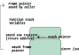
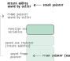
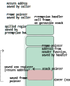
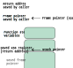

Posted 2024-08-07
This post is about how I investigated a frame pointer unwinding crash in the Go runtime. The bug was specific to 64-bit ARM: asynchronous preemption at a specific instruction, in certain functions, led to a kind of use-after-free bug which caused the runtime execution tracer to crash when collecting a traceback. The Go runtime is low-level, and can be intimidating and mysterious. But digging into a tricky bug is, in my experience, the best way to learn how a complex system really works. I wrote this post to remind myself how I diagnosed the bug, and to share some of the things I learned while doing so.
A few Datadog engineers reported crashes like this (lightly edited):
SIGSEGV: segmentation violation
PC=0x471c64 m=38 sigcode=1
goroutine 0 [idle]:
runtime.fpTracebackPCs(...)
runtime.traceStackID()
pc=0x471c64
runtime.traceEventLocked()
pc=0x4712d0
runtime.traceEvent()
pc=0x471030
runtime.traceGoPreempt(...)
runtime.gopreempt_m()
pc=0x457270
runtime.mcall()
pc=0x482224
goroutine 549321 [running]:
runtime.asyncPreempt2()
pc=0x44e26c
runtime.asyncPreempt()
pc=0x4853ec
golang.org/x/net/http2.(*PingFrame).Header()
pc=0x9ab404
golang.org/x/net/http2.(*Framer).checkFrameOrder()
pc=0x97f854
golang.org/x/net/http2.(*Framer).ReadFrame()
pc=0x97f5f8
google.golang.org/grpc/internal/transport.(*http2Client).reader()
[ ... ]
I was pinged to help because my job at Datadog is to maintain our continuous profiling capability for Go. My colleague Felix Geisendörfer and I had recently worked on the Go runtime execution tracer, which is where the crash was happening. We did this work as part of building Datadog's profiling timeline feature for Go, a tool for understanding latency and finding bottlenecks. We were running execution tracing widely in production. This was the first time we had seen any production crashes from the tracer. Check out Felix's talk How To Win Frames And Influence Pointers for a lot more on our work on execution tracing. We collaborated with the Go runtime maintainers a lot for this project. Datadog supports contributing to open-source projects like Go. Datadog uses Go heavily, our customers use Go, and I personally think the Go project is awesome. I also love debugging. I'm very happy to be able to do this kind of work in service of contributing to such a great project.
The crashing function, runtime.fpTracebackPCs,
was a function Felix and I had recently contributed to the Go runtime.
Its purpose is to efficiently collect a traceback.
It does so using a technique called frame pointer unwinding.
We added it specifically for the runtime execution tracer,
where traceback collection was the largest source of overhead.
Frame pointer unwinding involves maintaining a linked list of return instruction addresses (PCs),
updated as functions are called and return,
which is traversed when a traceback is requested.
Frame pointer unwinding breaks when the linked list is incorrectly manipulated. So, my approach here was to figure out:
The crash traceback gives a pretty clear signal for which call stack we're unwinding:
the crash happened during a call to runtime.traceGoPreempt,
so we were tracing a "preempt" event.
And on top of that, we see another goroutine with runtime.asyncPreempt on its call stack.
So, it seems likely that we failed to unwind that goroutine's call stack.
As the name implies, runtime.asyncPreempt is doing "asynchronous preemption".
I had to take a slight detour to figure out what that actually is.
Austin Clements gave an excellent talk,
Pardon the Interruption,
on what asynchronous preemption is and why it exists.
Basically, a goroutine is forced to yield execution so that other work can happen.
"Asynchronous" means this can happen at basically any point in its execution.
It's implemented using signals.
A signal is delivered to a goroutine to interrupt it.
Then, instead of running the next instruction,
a call to runtime.asyncPreempt is simulated,
as if the goroutine called the function itself.
That function then yields the goroutine's execution.
I wondered where precisely the goroutine in question was preempted.
The full crash traceback included instruction addresses,
and I also had access to the binary of the crashing process.
The function preceding runtime.asyncPreempt in the traceback is golang.org/x/net/http2.(*PingFrame).Header.
I used objdump to get the instructions for that function.
Here is where the preemption happened, in bold:
% objdump --disassemble-symbols='golang.org/x/net/http2.(*PingFrame).Header' ./binary ./binary: file format elf64-littleaarch64 Disassembly of section .text: 00000000009ab3b0: 9ab3b0: fe 0f 1d f8 str x30, [sp, #-48]! 9ab3b4: fd 83 1f f8 stur x29, [sp, #-8] 9ab3b8: fd 23 00 d1 sub x29, sp, #8 [ ... body elided ... ] 9ab400: ff c3 00 91 add sp, sp, #48 9ab404: fd 23 00 d1 sub x29, sp, #8 9ab408: c0 03 5f d6 ret [ ... ]
The Go internal ABI specifies how function calls and call frames work for 64-bit ARM. Here's what the code does:
str x30, [sp, #-48]!
stur x29, [sp, #-8]
x29 on ARM) in the word below the new stack framesub x29, sp, #8
Here's a sketch of the state of the goroutine's stack at this point:

Note that frame pointers are saved below the function's call frame.
So the first value is the frame pointer saved by the Header function's caller,
and the "saved frame pointer" value is the one saved by the Header function itself.
Then at the end of the function, we have the following cleanup:
add sp, sp, #48
sub x29, sp, #8
The function was interrupted after freeing the stack frame, but before restoring the frame pointer register. Now the call stack looks like this:
So, the frame pointer register points into now-freed stack memory. This seems problematic! What if the preemption handler uses some of that memory?
At this point I had basically completely identified the bug. I was quite lucky to have gotten so far with just a crash traceback and the binary. These kinds of bugs tend to be much more difficult to make a dent in. I could have packaged this up into a bug report and sent it to the Go team, and one of the experienced maintainers would have probably quickly found the root cause.
However, I suffered the all-too-common debugger's curse: tunnel vision. We can get fixated on a possible explanation, or a particular aspect of the bug that takes us far off the path to a solution. This curse can also be a gift: we can learn a lot in the struggle to understand something, and we can sometimes find impactful ideas that go deeper than the original problem. I learned some things in the process that will no doubt help me in the future. But I could have just as easily burned all of my energy on a dead end.
I wanted to recreate the crash reliably under a debugger.
The golang.org/x/net/http2.(*PingFrame).Header showed up in basically every instance of this crash.
I was fixated on this exact function getting preempted at that exact instruction.
At the time I was debugging this,
once I found out where the preemption was happening,
I jumped straight into a debugger and tried to reproduce the crash.
It wasn't until later that I more carefully considered the state of the frame pointers at that particular point in the function.
The Header function just returns a struct.
Here's the source.
I created a program with a basically identical struct,
and a function that returns the struct.
I then inspected the compiled output and confirmed the instructions were basically the same as the function from the crash.
I wrote a test which calls the function in a tight loop,
and then ran the test with the execution tracer enabled,
hoping that eventually the function would get preempted at the same instruction.
And... no crash.
Here's the code:
package fpcrash
import "testing"
type BigStruct struct {
a bool
b, c uint8
d, e uint32
}
//go:noinline
func MakeBigStruct() BigStruct {
return BigStruct{}
}
var sink BigStruct
func TestCrash(t *testing.T) {
for {
sink = MakeBigStruct()
}
}
I decided to try and make the preemption happen myself. For problems like this where assembly-level stuff is involved, I prefer the GNU Debugger (GDB). I learned that GDB can deliver signals to the program you're debugging. From Austin's talk, I knew that the runtime uses the SIGURG signal for asynchronous preemption. GDB can also set breakpoints at specific instruction addresses. I disassembled the function I wanted to preempt, found the specific instruction where I wanted the preemption to happen, and set a breakpoint there. When the breakpoint hit, I then delivered the SIGURG signal that triggers asynchronous preemption.
(gdb) disas 'fpcrash.MakeBigStruct' [2]
Dump of assembler code for function fpcrash.MakeBigStruct:
0x0000000000100830 <+0>: str x30, [sp, #-32]! [3]
0x0000000000100834 <+4>: stur x29, [sp, #-8]
0x0000000000100838 <+8>: sub x29, sp, #0x8
0x000000000010083c <+12>: stur xzr, [sp, #12]
0x0000000000100840 <+16>: str wzr, [sp, #20]
0x0000000000100844 <+20>: ldrb w0, [sp, #12]
0x0000000000100848 <+24>: mov x1, xzr
0x000000000010084c <+28>: mov x2, x1
0x0000000000100850 <+32>: mov x3, xzr
0x0000000000100854 <+36>: mov x4, x3
0x0000000000100858 <+40>: add sp, sp, #0x20
0x000000000010085c <+44>: sub x29, sp, #0x8 Here's where I want to interrupt
0x0000000000100860 <+48>: ret
0x0000000000100864 <+52>: udf #0
0x0000000000100868 <+56>: udf #0
0x000000000010086c <+60>: udf #0
End of assembler dump.
(gdb) b *0x000000000010085c
Breakpoint 1 at 0x10085c: file /home/ec2-user/fpcrash/fpcrash_test.go, line 13.
(gdb) r -test.trace=/dev/null
Starting program: /home/ec2-user/fpcrash/fpcrash.test -test.trace=/dev/null
[ ... ]
Thread 1 "fpcrash.test" hit Breakpoint 1, 0x000000000010085c in fpcrash.MakeBigStruct (~r0=..., ~r0=...) at /home/ec2-user/fpcrash/fpcrash_test.go:13
13 return BigStruct{}
(gdb) signal SIGURG
Continuing with signal SIGURG.
This still didn't crash.
I wanted to see what the sequence of frame pointers looked like.
So after hitting the first breakpoint,
I set a breakpoint in runtime.asyncPreempt2
and then delivered the signal.
I hit the second breakpoint, and I could now try following the frame pointers myself.
For every frame pointer address there is a return instruction address right next to it:
Thread 1 "fpcrash.test" hit Breakpoint 1, 0x000000000010085c in fpcrash.MakeBigStruct (~r0=..., ~r0=...) at /home/ec2-user/fpcrash/fpcrash_test.go:13
13 return BigStruct{}
(gdb) b 'runtime.asyncPreempt2'
Breakpoint 2 at 0x4750c: runtime.asyncPreempt2. (2 locations)
(gdb) signal SIGURG
Continuing with signal SIGURG.
Thread 1 "fpcrash.test" hit Breakpoint 2, runtime.asyncPreempt2 () at :1
[ ... step forward a few instructions to have runtime.asyncPreempt2 set up its call frame ... ]
(gdb) p/x $x29
$2 = 0x400009fd18
(gdb) x/g 0x400009fd18
0x400009fd18: 0x000000400009fd38
(gdb) x/a 0x400009fd18+8
0x400009fd20: 0x7a2dc <runtime.asyncPreempt+156>
(gdb) x/g 0x000000400009fd38
0x400009fd38: 0x400009ff18
(gdb) x/a 0x000000400009fd38+8
0x400009fd40: 0x10085c <fpcrash.MakeBigStruct+44>
(gdb) x/g 0x400009ff18
0x400009ff18: 0x0
The x/g lines dereference the given address.
This is how I'm following the frame pointer linked list.
The x/a lines dereference the given address and treat the value as an instruction address.
The return addresses that make up the call stack are stored 8 bytes above the frame pointers.
So, this is how I reconstruct the call stack with frame pointer unwinding.
I reached a 0 frame pointer, which makes frame pointer stop normally.
So, this explains why it's not crashing.
But the traceback is incomplete.
We should see the TestCrash function, at least.
Something is indeed broken!
I spent a long time making small tweaks to my program,
under the incorrect assumption that the MakeBigStruct method was somehow manipulating the frame pointer incorrectly.
I would tweak the code,
trigger the preemption,
and do frame pointer unwinding.
I did the unwinding step often enough by hand that it was getting tedious.
I learned that GDB can be scripted with Python,
so I wrote a bit of code to do the unwinding:
(gdb) py
>def fpunwind():
> _ptrptr = gdb.lookup_type('void').pointer().pointer()
> fp = gdb.selected_frame().read_register('x29')
> while fp != 0:
> fp = fp.reinterpret_cast(_ptrptr)
> pc = (fp+1).dereference()
> fp = fp.dereference()
> print(fp, pc)
(gdb) py fpunwind() # while at a breakpoint where I think the frame pointers are good
0x40000a7f38 0x10088c <fpcrash.TestCrash+28>
0x40000a7f58 0xc9f38 <testing.tRunner+232>
0x40000a7fa8 0xcad4c <testing.(*T).Run.func1+44>
0x0 0x79744 <runtime.goexit+4>
I finally figured out what was happening when I read back through my initial investigation notes. The asynchronous preemption handling code was going to use previously-freed stack space. I decided to check what the code was doing. Sure enough, the initial preemption handler code, run on the goroutine's stack, spills a bunch of registers. The preemption handler is like a normal function, and saves the frame pointer register, which will be the frame pointer register at the point where the function was interrupted. So the call stack looks like this:
I just needed to see which registers were saved around 32 bytes from the top of the preemption handler's frame, where the frame pointer register was pointing prior to preemption. It turned out to be some floating point registers. My test code didn't do any floating point operations, so those registers must have been 0! GDB lets you set register values, so it was easy enough to force non-zero values in the registers. With that, I was able to recreate the crash!
Thread 1 "fpcrash.test" hit Breakpoint 1, 0x000000000010085c in fpcrash.MakeBigStruct (~r0=..., ~r0=...) at /home/ec2-user/fpcrash/fpcrash_test.go:13
13 return BigStruct{}
(gdb) set $d30.s = 0xdeadbeef
(gdb) signal SIGURG
Continuing with signal SIGURG.
Thread 1 "fpcrash.test" received signal SIGSEGV, Segmentation fault.
runtime.traceStackID (mp=<optimized out>, pcBuf=..., skip=<optimized out>, ~r0=<optimized out>) at /home/ec2-user/sdk/go1.21.0/src/runtime/trace.go:987
987 nstk += 1 + fpTracebackPCs(unsafe.Pointer(curgp.sched.bp), pcBuf[2:])
(gdb) disas to show where we're faulting
[ ... ]
0x0000000000069370 <+544>: b 0x69350 <runtime.traceStackID+512>
=> 0x0000000000069374 <+548>: ldr x8, [x4, #8]
0x0000000000069378 <+552>: str x8, [x6, x0, lsl #3]
[ ... ]
(gdb) p/x $x4
$9 = 0xdeadbeef
Success! I modified my test program to put non-zero values in those registers. With that, the test crashed reliably. I had a reproducer and was ready to file a bug report.
I didn't do this at the time, but there's another useful GDB feature that would have helped me find where the old frame pointer was being overwritten. GDB supports setting watchpoints on specific memory addresses. Under the assumption that we had a frame pointer register pointing to freed stack space, I could have set a watchpoint on the address in the frame pointer register:
Thread 1 "fpcrash.test" hit Breakpoint 1, 0x000000000010085c in fpcrash.MakeBigStruct (~r0=..., ~r0=...) at /home/ec2-user/fpcrash/fpcrash_test.go:13
13 return BigStruct{}
(gdb) p/x $x29
$11 = 0x400009af18
(gdb) watch *0x400009af18
Hardware watchpoint 4: *0x400009af18
(gdb) signal SIGURG
Continuing with signal SIGURG.
Thread 1 "fpcrash.test" hit Hardware watchpoint 4: *0x400009af18
Old value = 634680
New value = 0
runtime.asyncPreempt () at /home/ec2-user/sdk/go1.21.0/src/runtime/preempt_arm64.s:47
47 CALL ·asyncPreempt2(SB)
(gdb) disas
[ ... ]
0x000000000007a2d0 <+144>: stp d28, d29, [sp, #456]
0x000000000007a2d4 <+148>: stp d30, d31, [sp, #472]
=> 0x000000000007a2d8 <+152>: bl 0x7b280 <runtime.asyncPreempt2>
So I would have seen that the memory the frame pointer register was pointing to was overwritten when the d30 and d31 were saved by runtime.asyncPreempt.
One more thing to note here: the floating point registers weren't special here. For my reproducer, the frame pointer register happened to point to where those registers were saved. But that depends on the frame size of the function that's getting preempted. The important thing is that the frame pointer register, prior to preemption, was pointing to stack memory that was just freed. Any junk could go on the stack where the frame pointer register was pointing.
I filed an issue to report this bug to the Go project. I figured the fix would be to rearrange the frame cleanup instructions. It seemed like the fix would need to happen in the compiler, which I don't know anything about. I didn't want to hold up getting the problem fixed while I ramped up on the compiler.
Keith Randall, one of compiler maintainers, quickly put together a fix. The fix was to rearrange the call frame cleanup instructions, making sure the frame pointer is restored before the call frame is freed. With that, the instructions look like this:
000000000010cc10 <fpcrash.MakeBigStruct>:
10cc10: f81e0ffe str x30, [sp, #-32]!
10cc14: f81f83fd stur x29, [sp, #-8]
10cc18: d10023fd sub x29, sp, #0x8
[ ... ]
10cc38: 910063fd add x29, sp, #0x18
10cc3c: 910083ff add sp, sp, #0x20
10cc40: d65f03c0 ret
And if the function were preempted at the next-to-last instruction, the call stack would look like this, and the frame pointer register would be safe to use:
I was surprised at first not to see my reproducer (or something similar) as a regression test in the fix. But my reproducer might not have actually been robust enough. It reliably crashed eventually on my machine each time I ran it. It can't run forever in CI, though. How long would the actual test wait until it could declare no bug? And would the test catch the same general kind of bug if it was reintroduced elsewhere, or if the runtime changed substantially? I wonder if there is a more formal, model-based way to check for the correctness of frame pointers. We can say certain qualities frame pointers should have: they should point to the value 0 or another valid frame pointer, there should be a return address stored at a fixed offset from where the frame pointer points, and a signal handler which wants to get a traceback should not observe the frame pointers in an inconsistent state. Perhaps we could build a tool to check these things comprehensively for a compiled binary?
I learned about several useful GDB features: delivering signals, breaking at specific instructions, scripting with Python. I learned about how preemption works, improving my mental model for the control flow of Go programs. I also understood a little more of the 64-bit ARM calling conventions.
I lost a lot of time to tunnel vision. Once I caught the scent of a possible cause for the crash, I jumped to a conclusion about where the problem was. I didn't fully digest what I saw based on the assembly I was reading, and overlooked a crucial fact (the function freed the frame before restoring the frame pointer), only revisiting it after hours of fruitless debugging. Debugging is about pinpointing the difference between expectation and reality. We should be thorough: we should lay out how we expect the system to work, take a full inventory of what we've observed, and then focus on the gaps in our understanding or observations. I like how Bryan Cantrill put it in his talk "The Hurricane's Butterfly".
It can be very tempting to think about debugging as the process of forming hypotheses. That is not what debugging is. Hypotheses are... Yes, a hypothesis is going to be a critical stage to debugging. It is the last stage of debugging.
When you debug, you should be iterating between questions and answers, questions and answers, questions and answers. And as you're iterating, the possible space of hypotheses gets smaller and smaller and smaller, until you don't have a choice.
Thanks to Daniel Schwartz-Narbonne, Matt Alp, and Felix Geisendörfer for reviewing this post. Special thanks to Felix for suggesting visualizations for the call stack state.
sp now points!
Back
Header function comes from one struct embedded in another.
Felix suggests that a method for the embedded struct might be generated,
with a bigger call frame to account for the other fields of the struct,
if the struct is used via an interface?
Back